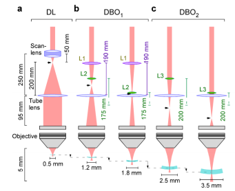

Easy Expansion of Field of View in Two-Photon Set Up

Two-photon micrsocopy is useful for reducing photo-damage and seeing deep into tissue samples. First patented in 1990 by Winfried Denk and James Strickler, it's a technique that has been used for decades in neuroscience as a minimally invasive way to image neurons in real time.
But we've already covered how to make one of those for "cheap." Today we're talking about modifying your 2P for a larger field of view and tunable shape of the point spread function. This recent pre-print--"Divergent excitation two photon microscopy for 3D random access mesoscale imaging at single cell resolution"--describes a simple upgrade "offering a several-fold expanded three-dimensional field of view that also maintains single-cell resolution."
The price-tag for this upgrade is ~$1500 made up of mostly conventional optics. They provide easy to interpret optical diagrams and information on the electrically tunable lens which is added for rapid z-scanning. The best part is that the "core design is readily implemented (and reversed) within a matter of hours, and fully compatible with a wide range of existing 2P customizations."
Want the readers digest version? Check out this thread from the authors.